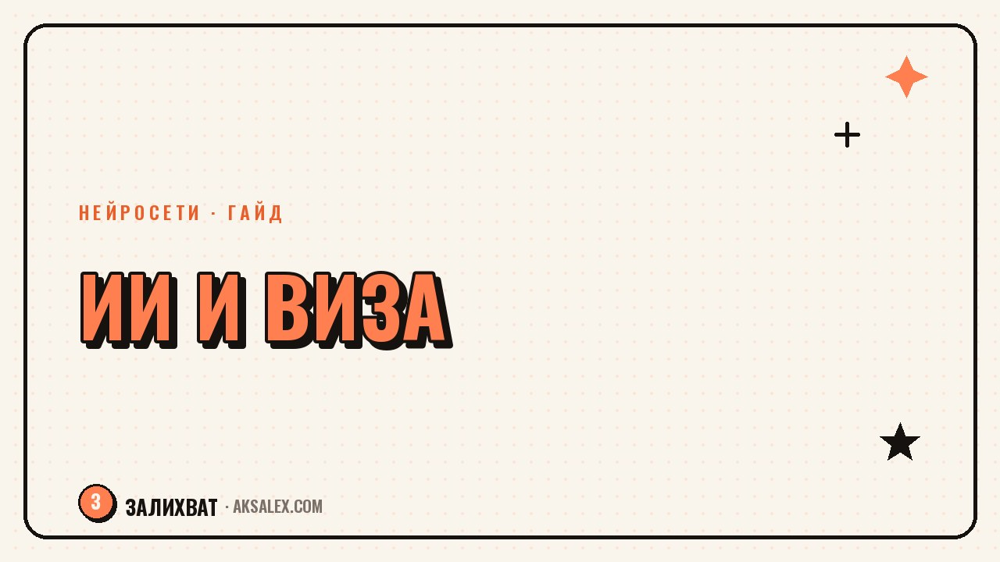

Нейросети для оформления визы и миграционных документов

Сбор документов на визу - это не сложно по сути, а изматывающе по объёму: десятки бумаг, формулировки на чужом языке, дедлайны и страх ошибиться в мелочи. Нейросети не заменят консульство и миграционного юриста, но сильно сокращают время на рутину - составление чек-листов, перевод, вычитку писем и подготовку к собеседованию. Разберём, что ИИ делает хорошо, а где доверять ему рискованно.
Зачем подключать нейросети к визовым хлопотам
Большая часть визового процесса - это не юридическая сложность, а организационная: собрать нужные бумаги в нужном порядке, перевести их, не упустить срок действия справки. Именно здесь нейросеть экономит часы. Она держит в голове весь список документов, напоминает про формат (нужна ли апостиль, нужен ли перевод с нотариальным заверением) и помогает структурировать сопроводительное письмо.
Отдельная польза - снижение тревоги. Когда перед глазами чёткий чек-лист и черновик письма, процесс перестаёт казаться хаосом. Это не магия, а обычная работа с текстом и структурой, которую нейросеть делает быстрее человека, но без собственной юридической ответственности за результат.
Что ИИ умеет делать хорошо
Чек-лист документов
Опиши нейросети цель поездки, страну и примерный статус (туризм, учёба, работа, переезд к родственнику) - и получишь черновой список документов с пояснениями, зачем каждый нужен. Это стартовая точка, а не финальный список: формальные требования нужно всегда сверять с сайтом посольства или консульства, потому что правила меняются быстрее, чем обучена модель.
Перевод и вычитка
Нейросети хорошо справляются с переводом стандартных формулировок и вычиткой писем на грамотность и тон. Для официальных документов, где требуется нотариальный или сертифицированный перевод, ИИ-перевод не подходит как финальный вариант - его используют как черновик, который потом проверяет переводчик с лицензией.
Сопроводительные письма
Письмо-приглашение, объяснительная записка о цели поездки, письмо работодателя - везде нужен ясный деловой тон без лишних эмоций. Нейросеть быстро собирает структуру и формулировки, тебе остаётся подставить фактические детали и перепроверить их на точность.
Разбор по шагам: как собрать пакет документов с ИИ
- Шаг 1. Опиши нейросети ситуацию максимально конкретно: страна, тип визы, статус поездки, есть ли приглашение
- Шаг 2. Попроси черновой чек-лист документов и сразу сверь его с официальным сайтом посольства или консульства
- Шаг 3. Загрузи текст письма или справки и попроси нейросеть проверить структуру, тон и логику изложения
- Шаг 4. Используй перевод как черновик, а финальную версию официальных бумаг отдай сертифицированному переводчику
- Шаг 5. Составь список вопросов, которые может задать консул, и прогони с нейросетью короткую симуляцию собеседования
Такой порядок защищает от главной ошибки - доверить нейросети финальное решение там, где нужна официальная бумага с печатью или подписью специалиста.
Какие инструменты выбрать
Для разных задач подходят разные сервисы - не обязательно искать один универсальный инструмент.
| Задача | Инструмент | Что делает хорошо | Где нужна проверка человеком |
|---|---|---|---|
| Чек-лист документов | ChatGPT, Claude, Gemini | Структурирует список по типу визы и цели | Актуальность требований конкретного посольства |
| Перевод текста | DeepL, Яндекс Переводчик | Быстрый черновой перевод с хорошим качеством | Официальные документы требуют сертифицированный перевод |
| Сопроводительное письмо | ChatGPT, Claude | Деловой тон, структура, логика изложения | Фактическая точность деталей и дат |
| Подготовка к собеседованию | ChatGPT, Claude | Симуляция вопросов консула, разбор формулировок ответов | Реальные правила и практика конкретного посольства |
Где нейросеть может ошибиться
Главный риск - устаревшая или неточная информация о конкретных требованиях. Визовые правила меняются по странам, иногда резко, и нейросеть обучена на данных, которые не всегда отражают последние изменения. Она может уверенно назвать список документов, который действовал год назад, но уже не работает.
Нейросеть - отличный секретарь для черновика, но плохой источник истины для официальных сроков и требований. Финальную проверку всегда делает консульство, сайт посольства или юрист.
Второй риск - персональные данные. Не стоит загружать в открытые чаты сканы паспорта, номера документов или финансовую информацию целиком. Для черновика письма достаточно обобщённых данных, а конкретные цифры и номера подставляются вручную в финальную версию.
Подготовка к собеседованию в посольстве
Собеседование - самая нервная часть процесса, и здесь нейросеть полезна именно как тренажёр. Попроси её сыграть роль консула и задать типичные вопросы о цели поездки, финансовой состоятельности и планах на возвращение. Так ты заранее слышишь свои ответы вслух и замечаешь слабые места в формулировках.
Полезно попросить нейросеть проверить ответы на противоречия: если в анкете указана одна цель поездки, а в устном ответе звучит другая, это снижает доверие к заявке. Нейросеть отлично ловит такие несостыковки в тексте - человеку со стороны это сделать проще, чем самому себе.
Частые вопросы
Может ли нейросеть заполнить визовую анкету вместо меня
Нейросеть может помочь со структурой ответов и формулировками, но финальную анкету нужно заполнять и проверять самостоятельно. Ошибка в официальной форме может стоить отказа, поэтому подстановку фактических данных ИИ доверять не стоит.
Какая нейросеть лучше переводит документы на визу
Для быстрого черновика хорошо работают DeepL и Яндекс Переводчик. Но для официальных документов нужен сертифицированный перевод от лицензированного переводчика - ИИ-перевод используется только как рабочая заготовка.
Безопасно ли загружать сканы паспорта в нейросеть
Лучше не загружать полные сканы документов в открытые чат-боты. Для черновика письма или чек-листа достаточно описать ситуацию словами, а конкретные номера и даты вписывать вручную в финальную версию.
Как подготовиться к собеседованию в посольстве с помощью ИИ
Попроси нейросеть сыграть роль консула и задать типичные вопросы о цели поездки и планах на возвращение. Это помогает услышать свои ответы со стороны и заранее убрать противоречия в формулировках.
Можно ли доверять нейросети список документов для визы
Чек-лист от нейросети - хорошая стартовая точка, но не финальный список. Требования меняются по странам и со временем, поэтому список всегда нужно сверять с официальным сайтом посольства или консульства.
Раз тема оказалась полезной, вот что почитать следующим. Умный дом без инженерного диплома: какие нейросети реально экономят время и деньги, а какие - только модное название на коробке.
Читать статью →а не вручную